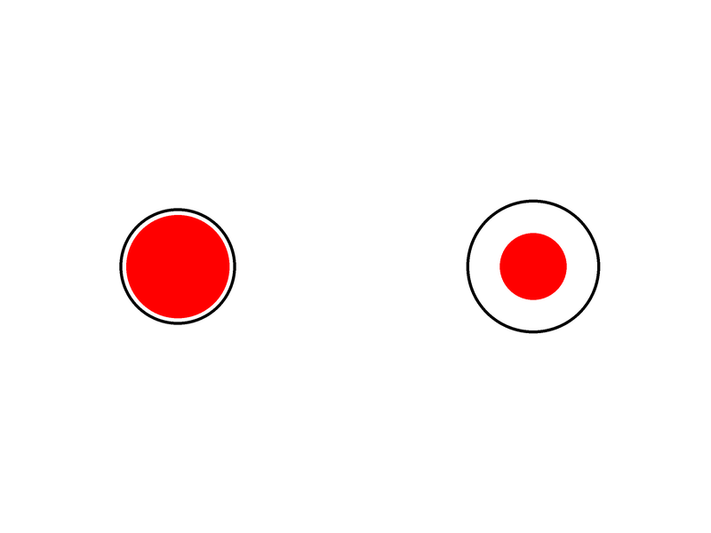
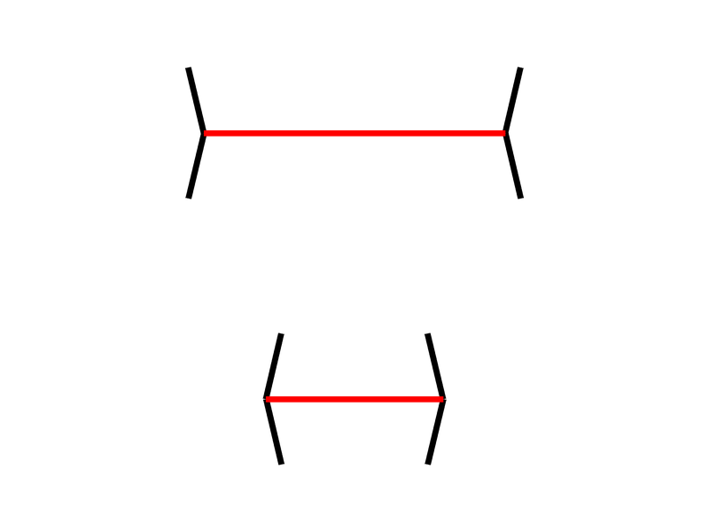
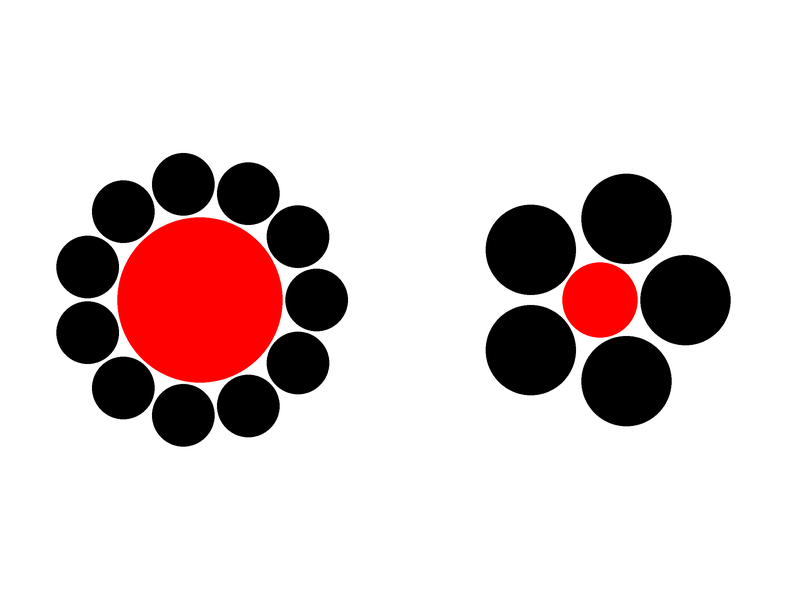
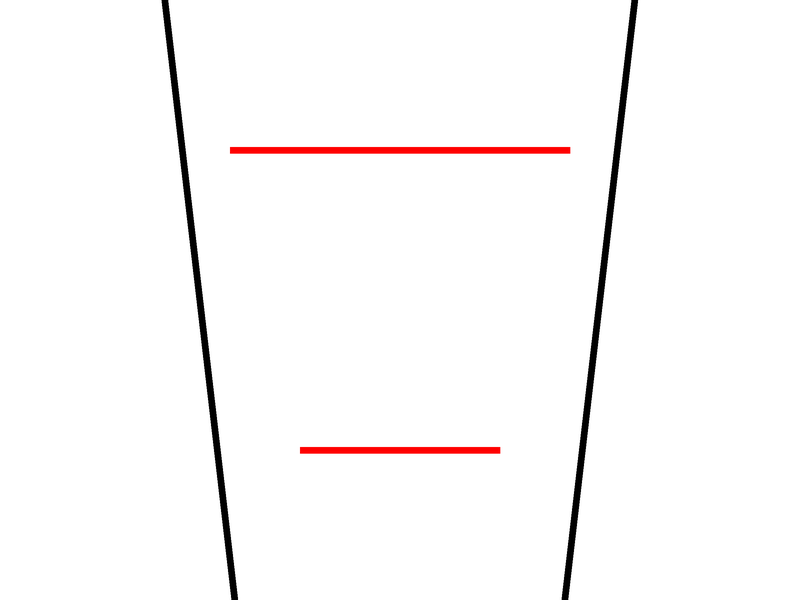
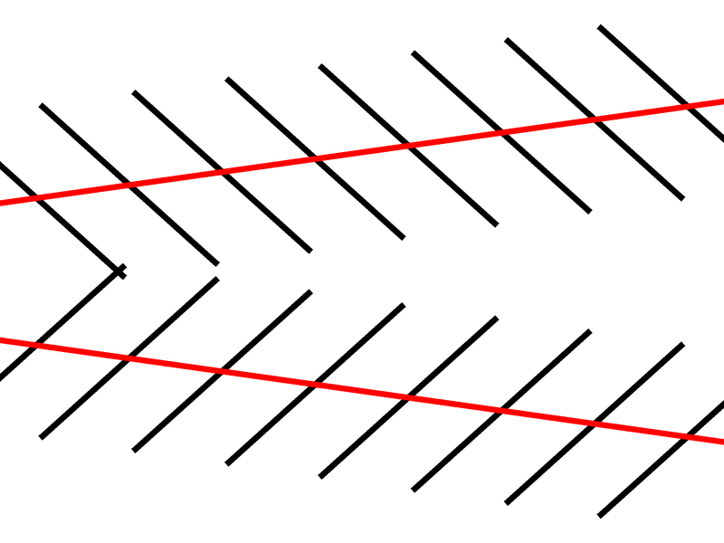
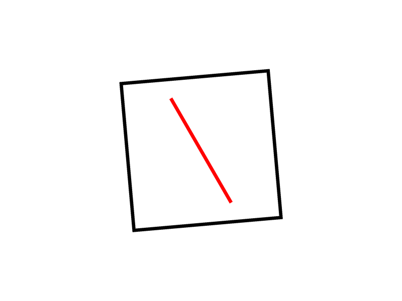
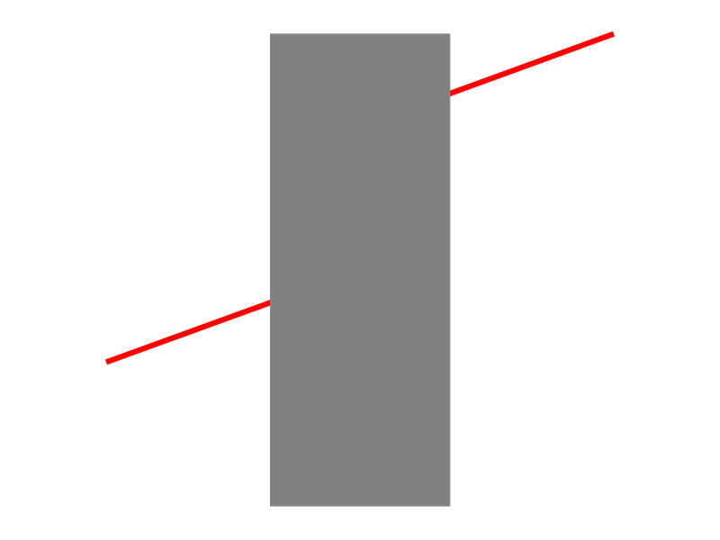
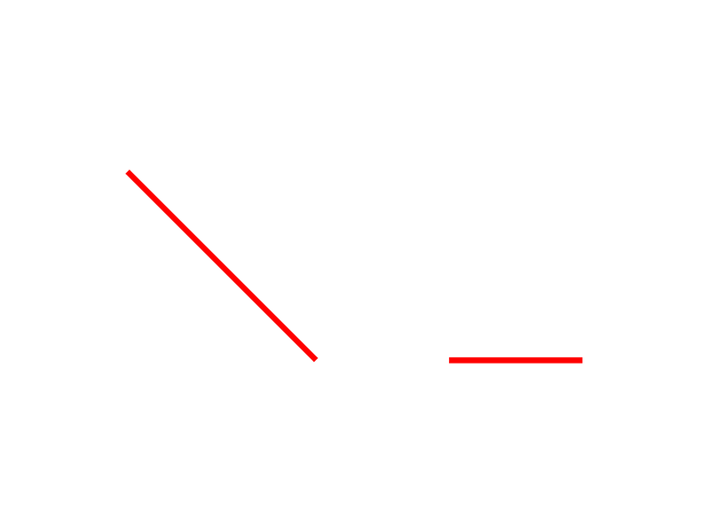

<head>
    <!-- Customize the title! -->
    <title>Illusion Game</title>
    <!-- jsPsych Scripts -->
    <script src="utils/jspsych/jspsych.js"></script>
    <script src="utils/jspsych/plugin-html-keyboard-response.js"></script>
    <script src="utils/jspsych/plugin-html-button-response.js"></script>
    <script src="utils/jspsych/plugin-fullscreen.js"></script>
    <script src="utils/jspsych/plugin-survey-text.js"></script>
    <script src="utils/jspsych/plugin-preload.js"></script>
    <script src="utils/jspsych/plugin-image-keyboard-response.js"></script>
    <script src="utils/jspsych/plugin-survey-multi-choice.js"></script>
    <script src="utils/jspsych/plugin-browser-check.js"></script>
    <!-- Other modules -->
    <script src="https://realitybending.github.io/JSmisc/misc/utils.js"></script>
    <!--<script src = "utils/jspsych/plugin-jsPsychPavlovia.js"></script>-->
    <!--<script src = "utils/jspsych/plugin-jspsych-pavlovia-2021.js"></script>-->
    <!-- Load stimuli -->
    <script src="stimuli/stimuli.js"></script>
    <script src="experiment.js"></script>
    <!-- CSS -->
    <link href="utils/jspsych/jspsych.css" rel="stylesheet" type="text/css" />
    <!--<script type="text/javascript" src="lib/vendors/jquery-2.2.0.min.js"></script>-->
    <!--<script type="text/javascript" src="lib/jspsych-7-pavlovia-2022.1.1.js"></script>-->

    <style>
        /* set canvas to be full screen */
        .jspsych-content {
            max-width: 100%;
        }

        /*Hide scrollbar while keeping it functional */
        body {
            overflow-y: scroll;
            overflow-x: flow;
        }

        Body::-webkit-scrollbar {
            display: none
        }
    </style>
</head>

<body></body>


<script>


    /* ----------------- Initialize experiment ----------------- */
    var timeline = []


    // /* Initialize connection to Pavlovia ----*/
    // var pavlovia_init = {
    //     type: jsPsychPavlovia,
    //     command: "init",
    //     setPavloviaInfo: function (info) {
    //         console.log(info);
    //         pavloviaInfo = info;
    //     }
    // }


    // timeline.push(pavlovia_init);

    var jsPsych = initJsPsych({
        show_progress_bar: true,
        message_progress_bar: "Completion",
        // exclusions: { min_width: 800, min_height: 600 }, /* exclude browsers that are not at least 800x600 pix */
        //  on_interaction_data_update: function (data) {console.log(JSON.stringify(data))}, /* record browser interactions */
        on_finish: function () {
            jsPsych.data.displayData("json")
            jsPsych.data
                .get()
                .localSave(
                    "json",
                    `${jsPsych.data.get().values()[0]["participant_id"]
                    }_IllusionGame.json`
                )
            // window.location = "https://app.prolific.co/submissions/complete?cc=XXX" /* redirect to prolific when experiment is finished */
        },
    })

    // Fullscreen mode
    timeline.push({
        type: jsPsychFullscreen,
        fullscreen_mode: true,
        delay_after: 0,
    })

    // Retrieve and save browser info
    var browser_check = {
        type: jsPsychBrowserCheck,
        data: {
            screen: "browser_info",
            version: "1.0",
            date: new Date().toLocaleDateString("fr-FR"),
            time: new Date().toLocaleTimeString("fr-FR"),
        },
        on_finish: function () {
            data = jsPsych.data.get().filter({screen: "browser_info"}).values()[0]
            jsPsych.data.addProperties({
                ["screen_height"]: data["height"],
                ["screen_width"]: data["width"],
            })
            for (var key in data) {
                if (
                    [
                        "vsync_rate",
                        "os",
                        "mobile",
                        "browser",
                        "browser_version",
                    ].includes(key)
                ) {
                    jsPsych.data.addProperties({
                        [key]: data[key],
                    })
                }
            }
            jsPsych.data.addProperties()
        },
    }
    timeline.push(browser_check)

    /* ----------------- Experiment  ----------------- */

    // Subject Information (Get from Prolific)
    var prolific_id = jsPsych.data.getURLVariable("PROLIFIC_PID")
    var jspsych_id = jsPsych.randomization.randomID(5)
    var participant_id = `${prolific_id}_${jspsych_id}`
    var study_id = jsPsych.data.getURLVariable("STUDY_ID")
    var session_id = jsPsych.data.getURLVariable("SESSION_ID")

    var participant_info = {
        type: jsPsychSurveyText,
        questions: [
            {
                prompt: "Please enter your age (in years, e.g., '31')",
                name: "age",
            },
            {
                prompt: "Please enter your country of birth (e.g., 'France')",
                name: "nationality",
            },
            {
                prompt: "Please enter your ethnicity (e.g., 'Caucasian')",
                name: "ethnicity"
            }
        ],
        on_finish: function () {
            jsPsych.data.addProperties({
                participant_id: participant_id,
                study_id: study_id,
                session_id: session_id,
            })
        },
        data: {
            screen: "demographics",
        },
    }

    var demographics = {
        type: jsPsychSurveyMultiChoice,
        questions: [
            {
                prompt: 'What is your gender?',
                options: ["Male", "Female", "Other", "Prefer not to say"],
                name: "sex",
            },
            {
                prompt: "What is your highest completed education level?",
                options: ["University (doctorate)", "University (master)", "University (bachelor)", "High school", "Other", "Prefer not to say"],
                name: "education",
            }
        ],
        data: {
            screen: "demographics",
        },
    }

    timeline.push(participant_info, demographics);

    // // Participant information
    // var participant_info = {
    //     type: jsPsychSurveyText,
    //     questions: [
    //         {
    //             prompt: "Enter the participant's ID:",
    //             placeholder: "S00",
    //             name: "Participant_ID",
    //         },
    //     ],
    //     data: {
    //         screen: "participant_info",
    //         version: "1.0",
    //         date: new Date().toLocaleDateString("fr-FR"),
    //         time: new Date().toLocaleTimeString("fr-FR"),
    //     },
    //     on_finish: function () {
    //         jsPsych.data.addProperties({
    //             participant_id: jsPsych.data.get().last().values()[0]["response"][
    //                 "Participant_ID"
    //             ],
    //         })
    //     },
    // }
    // timeline.push(participant_info)

    // Preload Instructions Stimuli
    timeline.push({
        type: jsPsychPreload,
        images: [
            "utils/stimuli_demo/Contrast_Demo.png",
            "utils/stimuli_demo/Delboeuf_Demo.png",
            "utils/stimuli_demo/Ebbinghaus_Demo.png",
            "utils/stimuli_demo/MullerLyer_Demo.png",
            "utils/stimuli_demo/Poggendorff_Demo.png",
            "utils/stimuli_demo/Ponzo_Demo.png",
            "utils/stimuli_demo/RodFrame_Demo.png",
            "utils/stimuli_demo/VerticalHorizontal_Demo.png",
            "utils/stimuli_demo/White_Demo.png",
            "utils/stimuli_demo/Zollner_Demo.png",
        ],
    })


    // General Instructions
    var general_instructions = {
        type: jsPsychHtmlButtonResponse,
        choices: ["Next"],
        stimulus:
            "<p><b>The Illusion Game</b></p>" +
            "<p>In this game of speed and reflex, you will need to make <b>visual judgments</b> (for instance, which circle is the biggest, or which line is the longest), as fast and as correctly as possible, while <b>resisting different visual illusions</b>.</p>" +
            "<p> After each illusion block, a score (out of 100) will be calculated based on your <b>accuracy</b> (number of correct answers) and your <b>speed</b> (time it took to answer).</p>" +
            "<p>The faster and more accurate you are, the higher your scores will be!</p>" +
            "<p>It can be challenging at times, so you want to rely on your intuition and gut feeling to answer as fast as you can, without making errors.</p>" +
            "<p>Don't worry, you will get a chance to practice before you begin the real game when you press NEXT.</p><br>",
        data: {screen: "general_instructions"},
    }
    timeline.push(general_instructions)

    /* Practice Block ----------------------------------------------------*/
    // Preload Practice Stimuli
    var delboeuf_stimuli = stimuli.filter(
        (stimuli) => stimuli.Illusion_Type === 'Delboeuf')

    timeline.push({
        type: jsPsychPreload,
        images: delboeuf_stimuli.map((a) => a.stimulus),
    })

    // Add Practice Trial Instructions
    var practice_instructions = {
        type: jsPsychHtmlKeyboardResponse,
        choices: ["enter"],
        stimulus: "<p><b>Let's practice!</b></p>" +
            "<p>In this practice trial, two red circles will appear side by side on the screen.</p>" +
            "<p>Your task is to select which <b>red circle is bigger</b> in size as fast as you can, without making errors.</p>" +
            "<p>Don't get distracted by the black outlines around the red circles!</p>" +
            "<p>Press <b>the LEFT or the RIGHT arrow</b> to indicate which is the bigger <b>red circle.</b></p>" +
            "<div style='float: center'></img>" +
            "<p></img></p>" +
            "<p class='small'>In this example, the correct answer is the <b>LEFT arrow</b>.</p></div>" +
            "<p>Are you ready? <b>Press ENTER to start</b></p>",
        on_start: function () {
            ; (document.body.style.cursor = "none"),
                (document.querySelector(
                    "#jspsych-progressbar-container"
                ).style.display = "none")
        },
        post_trial_gap: 1000,
        data: {screen: "practice_instructions"},
    }
    timeline.push(practice_instructions)

    // Get random subset of stimuli for practice block
    var practice_stimuli = getRandom(delboeuf_stimuli, 10)

    // Set test trials
    var practice_delboeuf = {
        type: jsPsychImageKeyboardResponse,
        stimulus: jsPsych.timelineVariable('stimulus'),
        choices: ['arrowleft', 'arrowright'],
        data: jsPsych.timelineVariable('data'),
        on_finish: function (data) {
            data.prestimulus_duration =
                jsPsych.data.get().last(2).values()[0].time_elapsed -
                jsPsych.data.get().last(3).values()[0].time_elapsed
            // Score the response as correct or incorrect.
            if (data.response != -1) {
                if (
                    jsPsych.pluginAPI.compareKeys(
                        data.response,
                        data.correct_response
                    )
                ) {
                    data.correct = true
                } else {
                    data.correct = false
                }
            } else {
                // code mouse clicks as correct or wrong
                if (data.click_x < window.innerWidth / 2) {
                    // use window.innerHeight for up vs down presses
                    data.response = "arrowleft"
                } else {
                    data.response = "arrowright"
                }
                if (
                    jsPsych.pluginAPI.compareKeys(
                        data.response,
                        data.correct_response
                    )
                ) {
                    data.correct = true
                } else {
                    data.correct = false
                }
            }
            data.type = illusion_name
            data.illusion_strength =
                jsPsych.timelineVariable("Illusion_Strength")
            data.illusion_difference =
                jsPsych.timelineVariable("Difference")
        },
    }

    // Set practice block timeline
    var practice_block = {
        timeline: [fixation, practice_delboeuf],
        timeline_variables: practice_stimuli,
        randomize_order: true,
        repetitions: 1
    }

    // Debrief for Practice Trials
    var practice_debrief = {
        type: jsPsychHtmlButtonResponse,
        choices: ["Let's Play!"],
        on_start: function () {
            ; (document.body.style.cursor = "auto"),
                (document.querySelector(
                    "#jspsych-progressbar-container"
                ).style.display = "inline")
        },
        stimulus: function () {
            var results = get_results(1000, 400)
            var show_screen = get_debrief_display(results)
            return show_screen.display_score +
                "<hr><p>Can you do better in the real game?</p>" +
                "<p>In the following trials, we will show you examples of each illusion before each block.</p>" +
                "<p>Each illusion block will be repeated two times (so that you have an opportunity to improve your score!), but the order of the blocks is random.</p>" +
                "<p>Remember, your goal is to be as <b>fast</b> and <b>accurate</b> as possible.</p>" +
                "<p>Good luck!</p><br>"
        },
        data: {screen: 'practice_results'}
    }

    timeline.push(practice_block, practice_debrief)

    /* Experiment Test Block ---------------------------------------------------------------------*/
    // Set experiment variables
    var trial_number = 1 // trial indexing variable starts at 1 for convenience
    var block_number = 1 // block indexing variable

    /* ============================================================== */
    /* ---------------------- DELBOEUF ILLUSION --------------------- */
    /* ============================================================== */
    var timeline_delboeuf = make_trial(
        (instructions = function () {
            return "<p><b>Part " +
                block_number +
                "</b></p>" +
                "<p>In this part, two red circles will appear side by side on the screen.</p>" +
                "<p>Your task is to select which <b>red circle is bigger</b> in size as fast as you can, without making errors.</p>" +
                "<p>Don't get distracted by the black outlines around the red circles!</p>" +
                "<p>Press <b>the LEFT or the RIGHT arrow</b> to indicate which is the bigger <b>red circle.</b></p>" +
                "<div style='float: center'></img>" +
                "<p></img></p>" +
                "<p class='small'>In this example, the correct answer is the <b>LEFT arrow</b>.</p></div>" +
                "<p>Are you ready? <b>Press ENTER to start</b></p>"
        }),
        (illusion_name = "Delboeuf"),
        (type = "leftright")
    )

    /* ================================================================ */
    /* ---------------------- MULLERLYER ILLUSION --------------------- */
    /* ================================================================ */
    var timeline_mullerlyer = make_trial(
        (instructions = function () {
            return "<p><b>Part " +
                block_number +
                "</b></p>" +
                "<p>In this part, two horizontal red lines will appear one above the other.</p>" +
                "<p>Your task is to select which <b>line is longer</b> in length as fast as you can, without making errors.</p>" +
                "<p>Don't get distracted by the surrounding black arrows at the end of the red lines!</p>" +
                "<p>Press <b>the UP or the DOWN arrow</b> to indicate where is the longer <b>red line.</b></p>" +
                "<div style='float: center'></img>" +
                "<p></img></p>" +
                "<p class='small'>In this example, the correct answer is the <b>UP arrow</b>.</p></div>" +
                "<p>Are you ready? <b>Press ENTER to start</b></p>"
        }),
        (illusion_name = "MullerLyer"),
        (type = "updown")
    )

    /* ================================================================ */
    /* --------------------- EBBINGHAUS ILLUSION ---------------------- */
    /* ================================================================ */
    var timeline_ebbinghaus = make_trial(
        (instructions = function () {
            return "<p><b>Part " +
                block_number +
                "</b></p>" +
                "<p>In this part, two red circles will appear side by side on the screen.</p>" +
                "<p>Your task is to select which <b>red circle is bigger</b> in size as fast as you can, without making errors.</p>" +
                "<p>Don't get distracted by the surrounding black circles around the red circles!</p>" +
                "<p>Press <b>the LEFT or the RIGHT arrow</b> to indicate which is the bigger <b>red circle.</b></p>" +
                "<div style='float: center'></img>" +
                "<p></img></p>" +
                "<p class='small'>In this example, the correct answer is the <b>LEFT arrow</b>.</p></div>" +
                "<p>Are you ready? <b>Press ENTER to start</b></p>"
        }),
        (illusion_name = "Ebbinghaus"),
        (type = "leftright")
    )

    /* ================================================================ */
    /* ------------------------ PONZO ILLUSION ------------------------ */
    /* ================================================================ */
    var timeline_ponzo = make_trial(
        (instructions = function () {
            return "<p><b>Part " +
                block_number +
                "</b></p>" +
                "<p>In this part, two horizontal red lines will appear one above the other.</p>" +
                "<p>Your task is to select which <b>line is longer</b> in length as fast as you can, without making errors.</p>" +
                "<p>Don't get distracted by the surrounding black lines!</p>" +
                "<p>Press <b>the UP or the DOWN arrow</b> to indicate which is the longer <b>red line.</b></p>" +
                "<div style='float: center'></img>" +
                "<p></img></p>" +
                "<p class='small'>In this example, the correct answer is the <b>UP arrow</b>.</p></div>" +
                "<p>Are you ready? <b>Press ENTER to start</b></p>"
        }),
        (illusion_name = "Ponzo"),
        (type = "updown")
    )


    /* ================================================================ */
    /* ----------------------- ZOLLNER ILLUSION ----------------------- */
    /* ================================================================ */
    var timeline_zollner = make_trial(
        (instructions = function () {
            return "<p><b>Part " +
                block_number +
                "</b></p>" +
                "<p>In this part, two horizontal red lines will appear one above the other.</p>" +
                "<p>Your task is to tell <b>the direction</b> towards which the red lines are converging, as fast as you can, and without making errors.</p>" +
                "<p>Don't get distracted by the black lines!</p>" +
                "<p>Press <b>the LEFT or the RIGHT arrow</b> to indicate the <b>direction where the red lines are pointing.</b></p>" +
                "<div style='float: center'></img>" +
                "<p></img></p>" +
                "<p class='small'>In this example, the correct answer is the <b>LEFT arrow</b>.</p></div>" +
                "<p>Are you ready? <b>Press ENTER to start</b></p>"
        }),
        (illusion_name = "Zollner"),
        (type = "leftright")
    )


    /* ================================================================ */
    /* ---------------------- CONTRAST ILLUSION ----------------------- */
    /* ================================================================ */
    var timeline_contrast = make_trial(
        (instructions = function () {
            return "<p><b>Part " +
                block_number +
                "</b></p>" +
                "<p>In this part, two small grey rectangles will appear one above the other.</p>" +
                "<p>Your task is to select which rectangle is <b>lighter</b> in colour as fast as you can, without making errors.</p>" +
                "<p>Don't get distracted by the surrounding background!</p>" +
                "<p>Press <b>the UP or the DOWN arrow</b> to indicate which is the <b>lighter rectangle.</b></p>" +
                "<div style='float: center'></img>" +
                "<p></img></p>" +
                "<p class='small'>In this example, the correct answer is the <b>UP arrow</b>.</p></div>" +
                "<p>Are you ready? <b>Press ENTER to start</b></p>"
        }),
        (illusion_name = "Contrast"),
        (type = "updown")
    )


    /* ================================================================ */
    /* ---------------------- RODFRAME ILLUSION ----------------------- */
    /* ================================================================ */
    var timeline_rodframe = make_trial(
        (instructions = function () {
            return "<p><b>Part " +
                block_number +
                "</b></p>" +
                "<p>In this part, one vertical red line will appear in a square.</p>" +
                "<p>Your task is to tell <b>which direction</b> the red line is leaning towards, as fast as you can, and without making errors.</p>" +
                "<p>Don't get distracted by the black square!</p>" +
                "<p>Press <b>the LEFT or the RIGHT arrow</b> to indicate the <b>direction where the red line is leaning towards.</b></p>" +
                "<div style='float: center'></img>" +
                "<p></img></p>" +
                "<p class='small'>In this example, the correct answer is the <b>LEFT arrow</b>.</p></div>" +
                "<p>Are you ready? <b>Press ENTER to start</b></p>"
        }),
        (illusion_name = "RodFrame"),
        (type = "leftright")
    )

    /* ================================================================ */
    /* --------------------- POGGENDORFF ILLUSION --------------------- */
    /* ================================================================ */
    var timeline_poggendorff = make_trial(
        (instructions = function () {
            return "<p><b>Part " +
                block_number +
                "</b></p>" +
                "<p>In this part, two parallel red lines will appear, but they are partially hidden by a grey rectangle.</p>" +
                "<p>Your task is to tell if the <b>red line to the right</b> of the rectangle is above or below the line to the left. You need to answer as fast as you can, without making errors.</p>" +
                "<p>Press <b>the UP or the DOWN arrow</b> to indicate whether the <b>right red line is actually above or below the left red line.</b></p>" +
                "<div style='float: center'></img>" +
                "<p></img></p>" +
                "<p class='small'>In this example, the correct answer is the <b>UP arrow</b>.</p></div>" +
                "<p>Are you ready? <b>Press ENTER to start</b></p>"
        }),
        (illusion_name = "Poggendorff"),
        (type = "updown")
    )

    /* ================================================================ */
    /* ----------------- VERTICAL-HORIZONTAL ILLUSION ----------------- */
    /* ================================================================ */
    var timeline_verticalhorizontal = make_trial(
        (instructions = function () {
            return "<p><b>Part " +
                block_number +
                "</b></p>" +
                "<p>In this part, two red lines will appear side by side.</p>" +
                "<p>Your task is to tell <b>which line is longer</b> in length as fast as you can, and without making errors.</p>" +
                "<p>Don't get distracted by the orientation of the lines!</p>" +
                "<p>Press <b>the LEFT or the RIGHT arrow</b> to indicate which <b>line is the longer one.</b></p>" +
                "<div style='float: center'></img>" +
                "<p></img></p>" +
                "<p class='small'>In this example, the correct answer is the <b>LEFT arrow</b>.</p></div>" +
                "<p>Are you ready? <b>Press ENTER to start</b></p>"
        }),
        (illusion_name = "VerticalHorizontal"),
        (type = "leftright")
    )

    /* ================================================================ */
    /* ------------------------- WHITE ILLUSION ----------------------- */
    /* ================================================================ */
    var timeline_white = make_trial(
        (instructions = function () {
            return "<p><b>Part " +
                block_number +
                "</b></p>" +
                "<p>In this part, two vertical grey rectangles will appear side by side.</p>" +
                "<p>Your task is to tell <b>which rectangle is of a lighter color</b>, as fast as you can, and without making errors.</p>" +
                "<p>Don't get distracted by the background color!</p>" +
                "<p>Press <b>the LEFT or the RIGHT arrow</b> to indicate which <b>side has the lighter grey rectangle.</b></p>" +
                "<div style='float: center'></img>" +
                "<p></img></p>" +
                "<p class='small'>In this example, the correct answer is the <b>LEFT arrow</b>.</p></div>" +
                "<p>Are you ready? <b>Press ENTER to start</b></p>"
        }),
        (illusion_name = "White"),
        (type = "leftright")
    )

    /* ================================================================ */
    /* ---------------------- END OF EXPERIMENT ----------------------- */
    /* ================================================================ */
    for (var i of [1, 2]) {
        for (var t of jsPsych.randomization.shuffleNoRepeats([
            timeline_delboeuf,
            timeline_mullerlyer,
            timeline_ebbinghaus,
            timeline_ponzo,
            timeline_zollner,
            timeline_contrast,
            timeline_rodframe,
            timeline_poggendorff,
            timeline_verticalhorizontal,
            timeline_white,
        ])) {
            timeline.push({timeline: t})
        }
        if (i === 1) {
            timeline.push(make_break)
        }
    }


    // Debriefing Information
    var end_experiment = {
        type: jsPsychHtmlButtonResponse,
        choices: ["End"],
        stimulus: function () {
            var results = get_results(
                1000, // population_scores["Total"]["IES_Mean"][0],
                400 // population_scores["Total"]["IES_SD"][0]
            )
            var show_screen = get_debrief_display(results, "Final")
            return (
                //show_screen.display_score +
                // "<hr>" +
                // show_screen.display_comparison +
                //"<hr>" +
                "<p>Thank you for participating!</p>" +
                "<p>You will now be redirected to Prolific to be reimbursed.</p>" +
                "<p>Please click 'OK' when asked to leave the site.</p>"
            )
        },
        data: {screen: "final_results"},
    }
    timeline.push(end_experiment)

    // Fullscreen mode
    timeline.push({
        type: jsPsychFullscreen,
        fullscreen_mode: false,
    })


    // /* Close connection to Pavlovia---*/
    // var pavlovia_finish = {
    //         type: jsPsychPavlovia,
    //         command: "finish",
    //         participantId: participant_id,
    //         completedCallback: function (){
    //             window.location.replace('https://app.prolific.co/submissions/complete?cc=CUWXHNY5');
    //     }
    // }


    jsPsych.run(timeline)


</script>

</html>